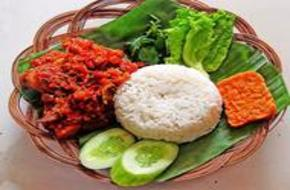
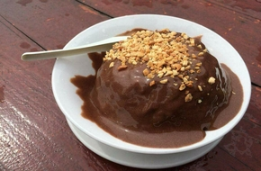

 Just IDR 20.000,- Ayam Sungkem Narotama Makanan Dengan Lalapan 1. Ayam 2. Tempe 3. Nasi 4. Sambal 5. Lalapan
 Just IDR 15.000,- Es Coklat Narotama Minuman Dengan Penuh Sensasi 1. Es Serut 2. Coklat 3. Toping Kacang